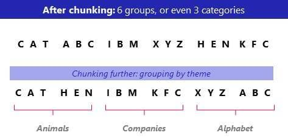
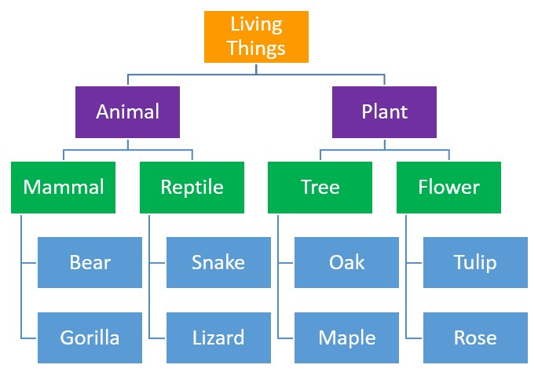
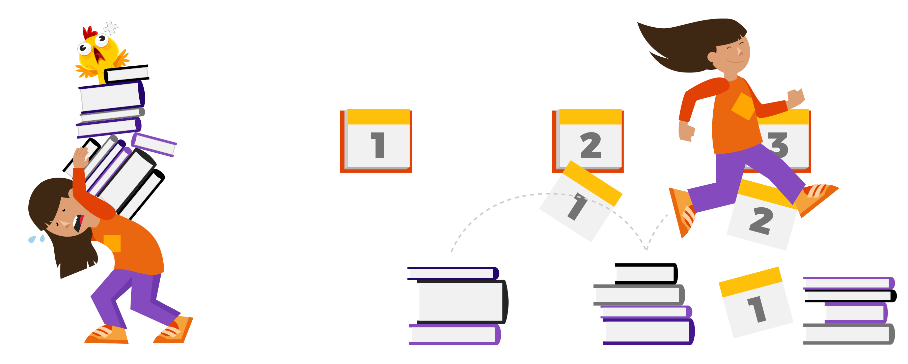

Encoding
Automatic Vs. Effortful Processing
Automatic Processing is when information are automatically processed without any effort, with effortful processing being the opposite, needing to use effort to process information.

Implicit Vs. Explicit Memories
Similar to automatic and effortful processing, implicit memories are the memories you can remember unconsciously with implicit memories being the memories that takes efforts to remember.
Effortful Processing Strategies
Chunking
Breaking large amount of information into chunks, so it's more manageable.
Mnemonics
Turning information into another form like auditory information or visual information which helps you remember information better.

Hierarchies
Categorize information into different similar characteristics to help remember different information.
The Spacing Effect
It's easier for us to remember information if it's stored over time. Instead of studying the day right before a test, it's better for us to study over a few days before the test.
Shallow Vs. Deep Processing
Shallow processing is when we remember a piece of meaningless information which we will forget quickly; however, deep processing is when we try to store information with meaningful association with it.